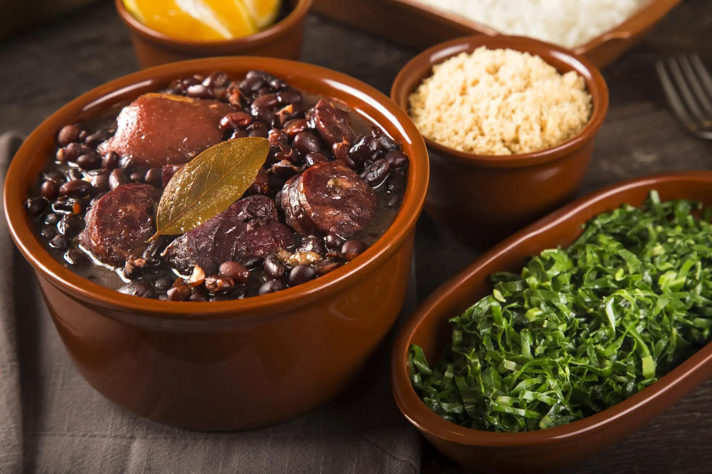

Feijoada

Description
Feijoada is Brazil's most beloved dish for a reason: it is absolutely delicious! Black beans simmer with smoked
pork and beef until tender, rich and oh so flavorful. In a nutshell, this is how Brazilians do comfort food!
Ingredients
- beans (usually black beans)
- onion
- garlic
- bacon
- salted beef and pork
- orange
- oil
- bay leaves
- salt
- pepper
Steps
- 1 day before cooking the black bean stew, soak the carne seca and sausages in cold water. Cover in plastic and
put in the fridge for 24 hours, changing the water at least 3 times.
- Soak the beans overnight in cold water.
- Place the meat in a large pot and cover with cold water. Bring to a boil and let them cook for 20 minutes. That
helps get rid of excess salt. This step is not needed if substituting the traditional salted meats.
- Combine the beans, orange, bay leaves, carne seca and water in the pot. Simmer for 30 minutes.
- Add the sausages and continue simmering until the meat is tender and the beans are cooked. Remove the orange and
discard.
- Slice the beef and sausage into bite sized chunks. Reserve.
- Sauté the bacon in a skillet. Add the onion and garlic, and sauté until softened.
- Pour a ladleful of beans (without liquid) and use a fork to mash them to release the starch.
- Add the mashed bean mixture to the stew pot and boil until the stew thickens. Taste and season with salt and
pepper as needed. Then, add the meat back, remove bay leaves and serve.